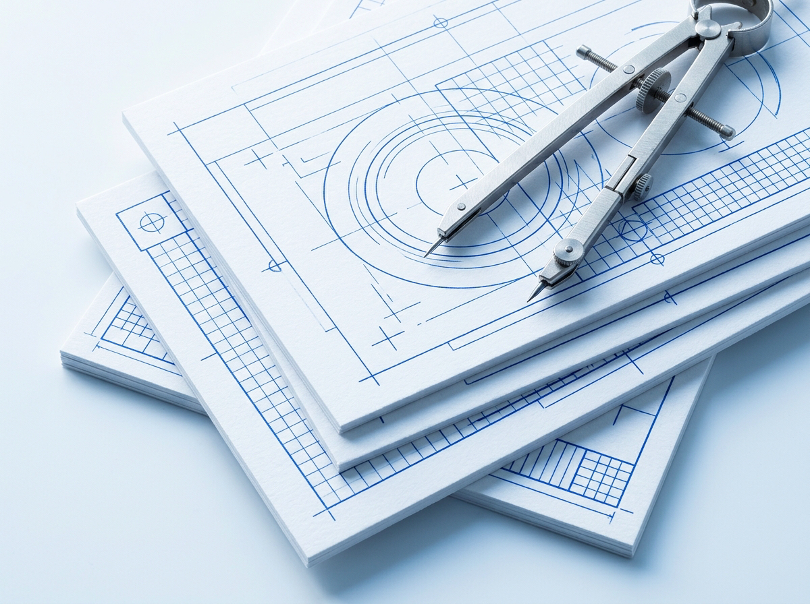
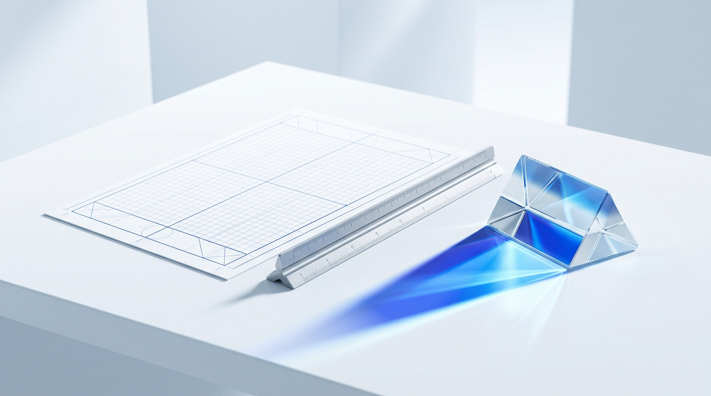
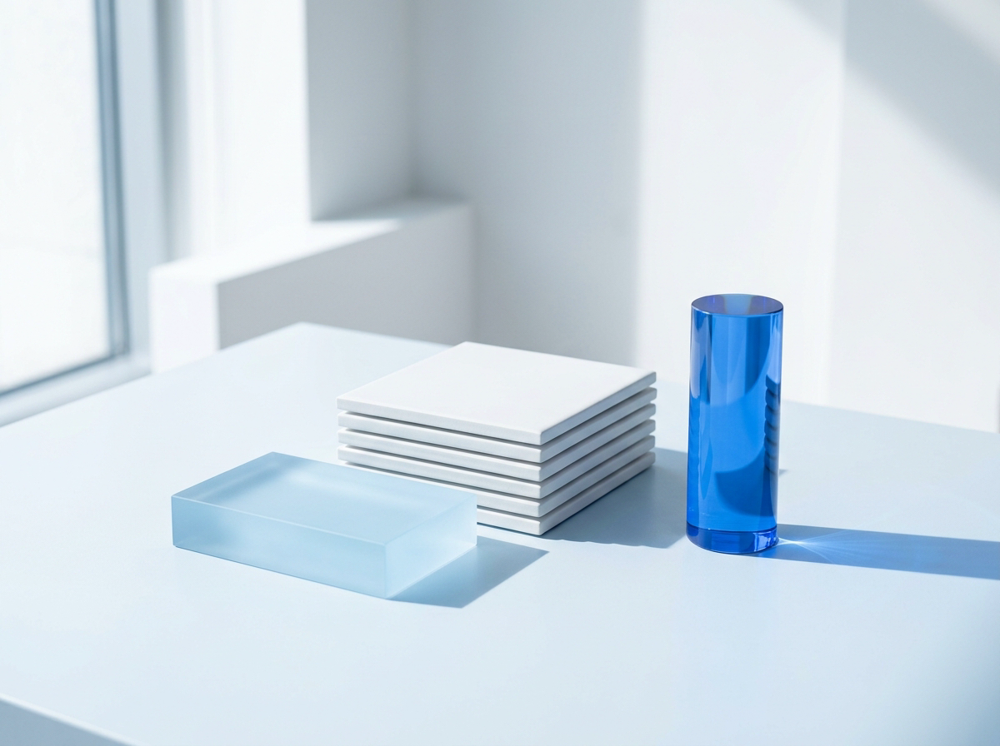

Semantic HTML5 & Scoped Token Architecture
Landmarks, logical heading cascades, and reusable CSS custom properties keep styling predictable across navigation, content plates, and interactive controls.

Pure HTML5, CSS3 custom properties, and vanilla JavaScript in a crisp white and royal-cobalt palette calibrated across five responsive viewports.

Pure HTML5, native CSS3, and standard browser JavaScript without bundlers.
Automated checks covering typography, contrast, touch targets, and layout anti-patterns.
Balanced layout variance, spring-interpolated motion, and editorial whitespace density.
Tested across 1440px, 1366px, 768px, 390px, and 360px widths in headless browsers.
Every surface, typographic step, and interactive state is built directly on native browser primitives for permanent maintainability and instant rendering.
Landmarks, logical heading cascades, and reusable CSS custom properties keep styling predictable across navigation, content plates, and interactive controls.

Headings scale smoothly between 360px mobile screens and 1440px desktop monitors using mathematical CSS clamp() functions and balanced line wrapping.
Instead of heavy drop shadows or dark neon panels, Kestrel layers pure white specimen plates, soft ice-blue bands, and cool blue-slate borders with WCAG AA+ contrast and hardware-accelerated hover physics.
space-2 0.5remspace-4 1.0remspace-6 1.5remspace-8 2.5remspace-12 5.0rem
Inspect the live white-and-blue CSS custom properties powering this page. Switch specification modules using mouse or keyboard arrow keys, test spatial density, and click any token row to copy its CSS declaration.
Architectural clarity at every viewport.
Paragraphs are constrained to a comfortable 60ch to 68ch reading measure with 1.65 line height and high-contrast blue-slate ink (#475569) on crisp white.
Transitions animate GPU-safe transform and opacity properties exclusively using exponential ease-out curves and IntersectionObserver entry reveals.
When prefers-reduced-motion: reduce is active, scroll reveals and icon translations collapse to instant states while preserving high-visibility 2px cobalt focus rings.
Most web interfaces ship megabytes of client-side JavaScript only to render static marketing copy in generic three-card rows. Kestrel pairs native web standards with automated visual verification so the code stays fast, readable, and effortless to maintain.
Inspect existing project assets and define semantic CSS custom properties in :root for warm alabaster grounds, pure white surfaces, carbon typography, and architectural cobalt actions.
Replace repetitive three-card rows with purposeful layout families: an asymmetric 7/5 hero split, a four-column hairline ledger, a three-cell bento grid, and an interactive specification workbench.
Serve the static bundle locally, test five viewport dimensions from 1440px down to 360px in Playwright and Chrome DevTools, verify zero console or network errors, and run the 59-rule Impeccable detector.
Technical details on how this static landing page is structured, styled, and verified.
No. The entire interface is authored in standard HTML5 (index.html), native CSS3 (css/style.css), and vanilla JavaScript (js/script.js). Any static file server or CDN can serve the directory directly with zero compilation.
All backgrounds, elevated surfaces, borders, text hierarchy, and interactive states reference semantic CSS custom properties declared in :root. Dark panels and theme inversions are omitted by design so visual rhythm and WCAG AA+ contrast remain consistent from top navigation to footer.
Core content, navigation links, and native <details> disclosures work without JavaScript. Scroll-entry animations only activate when JavaScript adds the .js-ready class and prefers-reduced-motion: no-preference is matched, ensuring content is never stuck invisible.
Taste Skill governs the layout variance, single-line navigation height cap, above-the-fold hero budget, Double-Bezel framing, and distinct section geometries. Impeccable governs the craft floor, browser-surface theming, contrast thresholds, and the 59-rule deterministic detector scan.
Inspect every CSS custom property in the live workbench above, or copy the complete :root token block directly into your stylesheet.